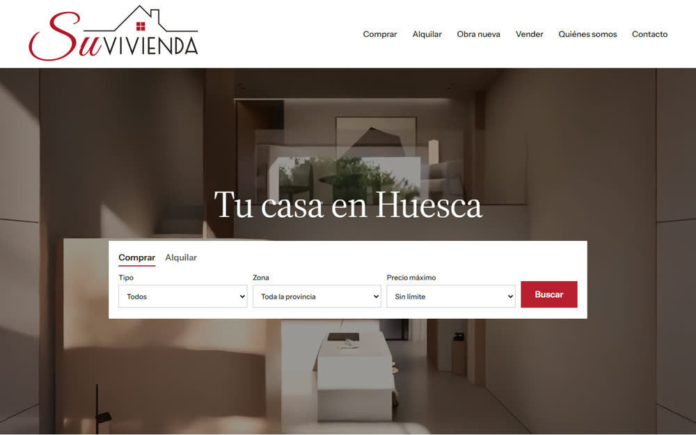
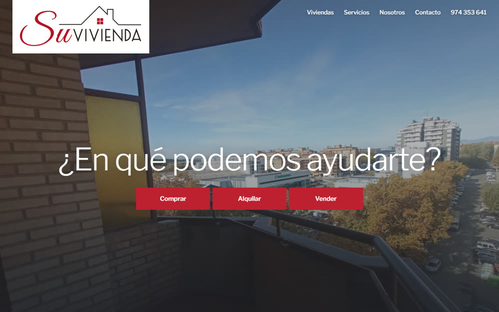
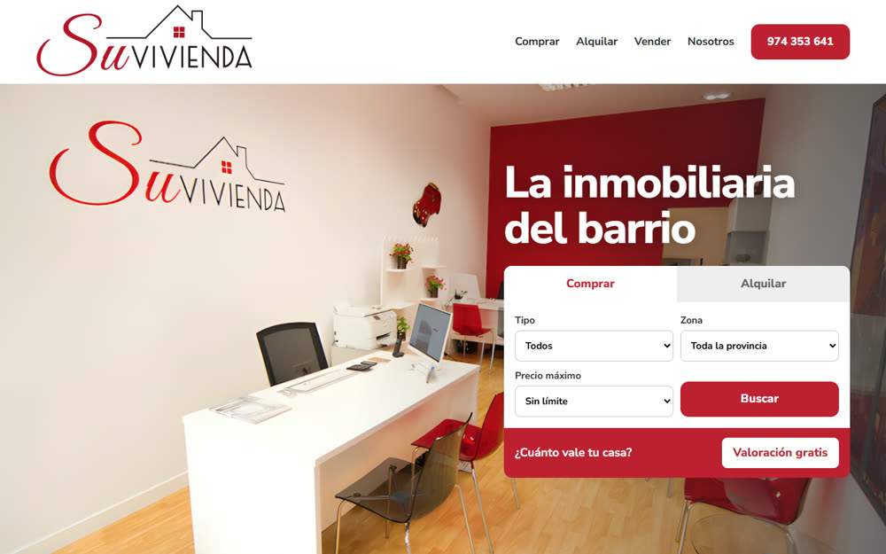
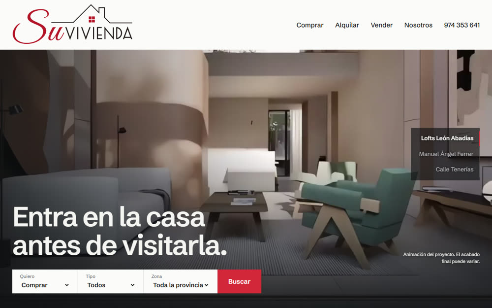

Selección
Modelo de agencia de referencia: buscador sobre el vídeo, zonas, obra nueva y destacados. Da imagen de agencia consolidada.
Ver Selección
Modelo de agencia de referencia: buscador sobre el vídeo, zonas, obra nueva y destacados. Da imagen de agencia consolidada.
Ver Selección
Una pregunta y tres caminos: comprar, alquilar o vender. La empresa y sus cifras van justo debajo. Transmite confianza.
Ver Ayuda
La oficina y las personas por delante, con un buscador y la valoración siempre a mano. Es la más cercana y la que más capta propietarios.
Ver Barrio
El vídeo manda: al hacer scroll recorres los lofts y dos viviendas. Es la más diferente a la competencia.
Ver Entra